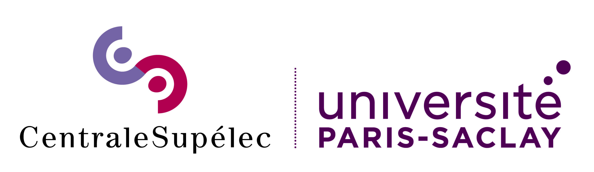

I'm a
ML | AI | NLP | DL | LLM | Big Data
About Me
My introduction
Results-driven data scientist with big data, machine learning, deep learning, and GEN-AI expertise. Proficient in Python, Big data technologies, PyTorch, and LLMs with a strong background in developing data-driven solutions across various domains, including healthcare, e-commerce, social media, and IoT. Proven ability to design and implement data analysis, NLP, KG, DL, and CV models. Demonstrated success in hackathons, achieved prestigious scholarships, conducted impactful research, and contributed to open-source projects, showcasing strong problem-solving, collaborative, and analytical skills with a commitment to innovate and impact using data science.
Skills
Education
Erasmus Mundus Masters in Big Data Management and Analytics (BDMA)
-
Semester 1: Université libre de Bruxelles (ULB), Brussels, Belgium
MS in Computer Science -
 Semester 2: Universitat Politècnica de Catalunya (UPC), Barcelona, Spain
Semester 2: Universitat Politècnica de Catalunya (UPC), Barcelona, Spain
MS in BDMA -

Semester 3: CentraleSupélec (CS), Université Paris-Saclay, Paris, France
M2 in BDMA
Indian Institute of Science Education and Research (IISER), Bhopal
- Bachelors in Electrical Engineering and Computer Science (EECS)
- Minor in Data Science and Engineering (DSE)
- G.P.A.: 9.57 / 10.00
Experience
Capital Fund Management (CFM)
Data Science Intern
- Building LLM agents to auto-resolve data pipeline alerts for the data referential equity team
- Technologies: Python, OracleDB, LangChain, LangGraph, Google ADK, FastAPI, Streamlit
MobilityDB
Open Source Developer
- Improved JMEOS, Java binding for the MEOS spatiotemporal library
- Technologies: C, Java, FFI, CI/CD, GitHub Actions, Python
- Contributed 30K+ lines of code to JMEOS and MobilityDB repositories
- Boosted testing coverage by 70% using JUnit for MEOS data types
- Automated documentation deployment using GitHub Pages, streamlining API visibility for 500+ users
- Built CI/CD pipelines with GitHub Actions, cutting build and integration times by 30%
Health Technologies Lab (HTL), IBME, University of New Brunswick (UNB)
Research and Development Intern
- Worked on Translating Foot Pressure Maps to 3D Human Poses
- Technologies: Pytorch, Python, Mediapipe, TensorFlow, Keras, OpenCV, MATLAB
- Captured foot pressure maps using 100Hz tiles; mapped to 3D poses with 33 keypoints
- Used video from 8 cameras as supervision; developed Encoder-Decoder, CRNN, and CNN+LSTM models
- Evaluated models using MPJPE and MSE, enabling non-invasive person identification with 95% accuracy
Publications
Thermal Vision: Pioneering Non-Invasive Temperature Tracking in Congested Spaces
December 2022 – August 2023Published in Elsevier ScienceDirect Smart Health Journal
Technologies:
Python, OpenCV, TensorFlow, Keras, PyTorch, Scikit-learn, YOLO, IoT
Description:
- Co-authored paper: "Thermal Vision: Pioneering Non-Invasive Temperature Tracking in Congested Spaces" as part of my Bachelor's thesis
- Developed real-time temperature tracking in crowded environments using edge devices
- Achieved 94% thermal face detection accuracy and R2 score of 0.96 in real-time temperature estimation
Abstract:
Non-invasive temperature monitoring of individuals plays a crucial role in identifying and isolating symptomatic individuals. Temperature monitoring becomes particularly vital in settings characterized by close human proximity, often referred to as dense settings. However, existing research on non-invasive temperature estimation using thermal cameras has predominantly focused on sparse settings. Unfortunately, the risk of disease transmission is significantly higher in dense settings like movie theaters or classrooms. Consequently, there is an urgent need to develop robust temperature estimation methods tailored explicitly for dense settings. Our study proposes a non-invasive temperature estimation system that combines a thermal camera with an edge device. Our system employs YOLO models for face detection and utilizes a regression framework for temperature estimation. We evaluated the system on a diverse dataset collected in dense and sparse settings. Our proposed face detection model achieves an impressive mAP score of over 94 in both in-dataset and cross-dataset evaluations. Furthermore, the regression framework demonstrates remarkable performance with a mean square error of 0.18 °C and an impressive R2 score of 0.96. Our experiments’ results highlight the developed system’s effectiveness, positioning it as a promising solution for continuous temperature monitoring in real-world applications. With this paper, we release our dataset and programming code publicly.
Projects
Explore some of my recent workSplat Space Diffusion
September 2024 – PresentGEN-AI, CV, DL
Technologies:
Python, OpenCV, PyTorch
Description:
- Image Generation using Diffusion Models and 2D Gaussian Splatting.
- Trained diffusion models on Gaussian representations in splat space, instead of pixel or embedding space.
MediReels
October 2024LLM, GEN-AI
Technologies:
Python, Mistral-large, GCP, HuggingFace, Streamlit, FastAPI, Edge-tts, Langchain, Moviepy, FLUX.1-dev, Tavily, Asyncio, Pydub
Description:
- Mistral X Alan Hackathon; Developed a platform for generating engaging short videos on medical topics.
- Reduction in content creation time from several days of research, creation, and editing to under 10 minutes.
SpicyBytes
February – July 2024BIG DATA, GEN-AI, VLM, LLM, DL, ML
Technologies:
Python, Scikit-learn, Selenium, pySpark, MLflow, Streamlit, BigQuery, Minio, GCS, Airflow, Neo4J, GraphDB, Looker Studio, Llama, Langchain, Gemini
Description:
- Scraped 1M+ product listings from 15K+ stores across 60+ postal codes of Barcelona.
- Platform aimed at reducing food waste for 200K+ students in Barcelona; pitched as a startup at UPC.
- Integrated multilingual OCR using Gemini-1.5-pro to automate product inventory from scanned user bills.
- Forecasted sales trends using Facebook Prophet and implemented dynamic pricing based on perishability.
- Integrated a Llama-based food recommendation engine and BERT-based sentiment analysis for user reviews.
Klìnic
May 2024LLM, KG, GEN-AI, DL
Technologies:
Python, LLM, GPT-4, LangChain, InterSystems IRIS Vector Search, RAG, Streamlit
Description:
- 1st place at MLH HackUPC 2024; Platform to assist clinicians and researchers in navigating the landscape of previous clinical trials.
- Created a knowledge graph with 500K+ entries from NIH MedGen and clinical trials datasets.
- Used KG embeddings in RAG to enhance query accuracy by reducing hallucinations.
- Stored KG in IRIS vector DB to find similar diseases based on new queries using a similarity threshold.
- Retrieved clinical trial info via API; summarized trials with GPT-4 and extracted statistical insights.
- Enhanced accuracy of queries by using KG embeddings in RAG, leading to an observable reduction in hallucinations while summarizing trials and extracting statistical insights using GPT-4.